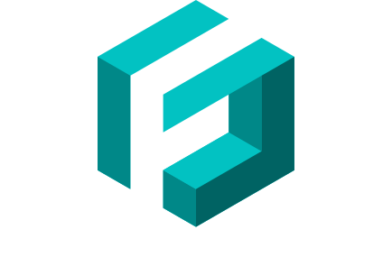

class: center, middle # Boilerplate Free² Monads with Freestyle  .footnote[Lech Głowiak, 2018] ??? ### Who knows what Free Monads are? ### Who commercially writes Free Monads? ### Why ? ### I beg you, ask questions! --- ## .center[Free Monad] ### .green[Interpreter pattern] ??? The Interpreter Pattern: * aspects (statistics, reporting, error handling) * analysis instead of blind execution: Slick, (Free Applicatives) (47deg) Fetch, (twitter) Stitch, (FB) Haxl - batching, concurrency, cacheing - consistency * validate before execution --- ## .center[Free Monad] ### .green[Interpreter pattern] * #### One business logic - different technicalities ??? This is for DDD people --- ## .center[Free Monad] ### .green[Interpreter pattern] * #### One business logic - different technicalities ### Embedded DSL ??? DSL embedded in Scala - your Free defines primitives but you get composition and abstraction from Scala --- ## .center[Free Monad] ### .green[Interpreter pattern] * #### One business logic - different technicalities ### Embedded DSL ### Runtime overhead --- ## .center[Free Monad] ### .green[Interpreter pattern] * #### One business logic - different technicalities ### Embedded DSL ### Runtime overhead ### .red[Boilerplate & obscurity] ??? I'll show this with an example! --- ## .center[Free Monad] ### .green[Interpreter pattern] #### ### ### ### .red[Boilerplate & obscurity] ??? This trade-off is my focus! * [Daniel Spiewak can code Free Monad](https://www.youtube.com/watch?v=aKUQUIHRGec) from scratch in 15 minutes to impress you * [Cats implementation](https://github.com/typelevel/cats/blob/master/free/src/main/scala/cats/free/Free.scala) for interested students * there exists also Free Applicative (also subject of Freestyle) * Drawbacks: * Having one Free Monad brings non-trivial amount of boilerplate and obscurity * Having N of them brings sh*tload of boilerplate and obscurity --- #### Monad ```scala def pure(a: A): M[A] def flatMap(ma: M[A])(f: A => M[B]): M[B] ``` Plus some laws... #### Type constructor ```scala List[A], Option[A], Future[A], Id[A] ``` #### Natural transformations ```scala trait `~>`[F[_], G[_]] { def apply[A](fa: F[A]): G[A] } ``` #### Id trick ```scala type Id[A] = A ``` ??? * Monad is FP - for sequential computations - do notation, for-comprehension * pure - place pure value in monadic context * flatMap - allows to run function from pure value to monad in monadic context --- ### At a glance ```scala sealed trait Free[F[_], A] { def flatMap[B](f: A => Free[F, B]): Free[F, B] = Bind(this, f) def foldMap[G[_] : Monad](nat: F ~> G): G[A] = this match { case Pure(a) => Monad[G].pure(a) case Suspend(fa) => nat(fa) case Bind(target, f) => Monad[G].flatMap(target.foldMap(nat))(a => f(a).foldMap(nat)) } } object Free { def pure[F[_], A](a: A): Free[F, A] = Pure(a) def liftM[F[_], A](fa: F[A]): Free[F, A] = Suspend(fa) final case class Pure[F[_], A](a: A) extends Free[F, A] final case class Suspend[F[_], A](fa: F[A]) extends Free[F, A] final case class Bind[F[_], E, A](a: Free[F, E], f: E => Free[F, A]) extends Free[F, A] } ``` --- ##.center[User management example] ```scala trait UserDB { def insert(e: Email, p: PasswordHash): Future[Try[UserId]] def queryByEmail(e: Email): Future[Option[(UserId, PasswordHash)]] } ``` --- ##.center[User management example] ```scala trait UserDB { def insert(e: Email, p: PasswordHash): Future[Try[UserId]] def queryByEmail(e: Email): Future[Option[(UserId, PasswordHash)]] } ``` ```scala trait ExampleService { val db: UserDB def saveUser(e: Email, p: PasswordHash): Future[UserInsertionResult] = db.queryByEmail(e).flatMap { case None => db.insert(e, p).map { case Success(id) => UserInserted(id) case Failure(err) => DBFailure(err) } case Some(_) => Future.successful(AlreadyExists) } } ``` ??? We'll compare solution that uses Free Monad to this! Yes, I know it's racy! --- ##.center[User management example] ```scala sealed trait UserDB[A] object UserDB { case class Insert(e: Email, p: PasswordHash) extends UserDB[Try[UserId]] case class QueryByEmail(e: Email) extends UserDB[Option[(UserId, PasswordHash)]] } ``` ```scala object UserDBPrograms { def saveUser(e: Email, p: PasswordHash): Free[UserDB, UserInsertionResult] = Free.liftM(QueryByEmail(e)).flatMap { case None => Free.liftM(Insert(e, p)).map { case Success(id) => UserInserted(id) case Failure(err) => DBFailure(err) } case Some(_) => Free.pure(AlreadyExists) } } ``` ??? Requires Interpreter aka Handler aka Natural Transformation to get final Result. Extra `Free.liftM`, `Free.pure` are present - boilerplate. --- ##.center[Pattern] Imperative ```scala trait ServiceName { def operationName(p: Parameter): Future[Result] } ``` Abstract over Monad ```scala trait ServiceName[M] { def operationName(p: Parameter): M[Result] } ``` Free ```scala sealed trait ServiceName[A] object ServiceName { case class OperationName(p: Parameter) extends Service[Result] } ``` --- ##.center[Pattern] ### .center[.green[Simple and tedious => macros, FTW!]] --- ##.center[Interpreter aka Natural Transformation] ```scala class UserDBImpl extends UserDB { def insert(e: Email, p: PasswordHash): Future[Try[UserId]] = { code that inserts ... } def queryByEmail(e: Email): Future[Option[(UserId, PasswordHash)]] = { code that queries ... } } ``` --- ##.center[Interpreter aka Natural Transformation] ```scala val userDBToId: UserDB ~> Id = new (UserDB ~> Id) { override def apply[A](fa: UserDB[A]): Id[A] = fa match { case Insert(e, p) => synchronouslyInsertUserToDb(e, p) case QueryByEmail(e) => synchronouslyQueryForUserWithEmail(e) } } ``` ```scala val naiveUserDBToFuture: UserDB ~> Future = new (UserDB ~> Future) { override def apply[A](fa: UserDB[A]): Future[A] = Future(userDBToId(fa)) } ``` ```scala def wrapImperativeDBToFuture(i: UserDBImperative): UserDB ~> Future = new (UserDB ~> Future) { override def apply[A](fa: UserDB[A]): Id[A] = fa match { case Insert(e, p) => i.insert(e, p) case QueryByEmail(e) => i.queryByEmail(e) } } ``` ??? Handlers live on library-level, it's not language feature, thus they add extra dependencies and complexity. --- ##.center[Combining Free Algebras] ```scala sealed trait Logging[A] object Logging { final case class Debug(msg: String) extends Logging[Unit] final case class Info(msg: String) extends Logging[Unit] final case class Error(msg: String, throwable: Option[Throwable]) extends ... } ``` ```scala case class WSResult(code: Int, headers: ...) trait WS[A] object WS { final case class Call(url: String, method: String) extends WS[WSResult] } ``` --- ##.center[Combining Free Algebras] ```scala type UserDbAndLogging[A] = EitherK[UserDB, Logging, A] type App[A] = EitherK[UserDbAndLogging, WS, A] ``` ??? Step one: define combined algebras --- ##.center[Pattern] ```scala type AppMadeOfTwo[A] = EitherK[AlgebraOne, AlgebraTwo, A] type AppMadeOfThree[A] = EitherK[AppMadeOfTwo, AlgebraThree, A] type AppMadeOfFour[A] = EitherK[AppMadeOfThree, AlgebraFour, A] type AppMadeOfFive[A] = EitherK[AppMadeOfFour, AlgebraFive, A] type AppMadeOfSix[A] = EitherK[AppMadeOfFive, AlgebraSix, A] ``` --- ##.center[Pattern] ```scala type AppMadeOfSix[A] = CopK[AlgebraOne ::: AlgebraTwo ::: AlgebraThree ::: AlgebraFour ::: AlgebraFive ::: AlgebraSix ::: KNil, A] ``` .footnote[.center[https://github.com/frees-io/iota]] ??? `CopK` is from `Iota` project: --- ##.center[Pattern] ### .center[.green[Simple and tedious => macros, FTW!]] --- ##.center[Combining Free Algebras #2] ```scala class UserDBOperations[F[_]](implicit I: InjectK[UserDB, F]) { def insert(e: Email, p: PasswordHash) = Free.inject[UserDB, F](Insert(e, p)) def queryByEmail(e: Email) = Free.inject[UserDB, F](QueryByEmail(e)) } object UserDBOperations { implicit def userDBOperations[F[_]]( implicit I: InjectK[UserDB, F] ): UserDBOperations[F] = new UserDBOperations[F] } ``` ??? Repeat for each algebra... --- ##.center[Pattern] ```scala class AlgebraOperations[F[_]](implicit I: InjectK[Algebra, F]) { def operationA(operation_a_params) = Free.inject[UserDB, F](OperationA(operation_a_params)) ... } object AlgebraOperations { implicit def algebraOperations[F[_]]( implicit I: InjectK[Algebra, F] ): AlgebraOperations[F] = new AlgebraOperations[F] } ``` --- ##.center[Pattern] ### .center[.green[Simple and tedious => macros, FTW!]] --- ##.center[Combining Free Algebras #3] ```scala val appToId: App ~> Id = userDBToId or logToId or wsToId val appToFuture: App ~> Future = userDBToFuture or logToFuture or wsToFuture ``` --- ##.center[Combining Free Algebras #3] ```scala def saveUser(e: Email, p: PasswordHash) (implicit D: UserDBOperations[MyApp], L: LoggingOperations[MyApp]) : Free[MyApp, UserInsertionResult] = { import D._, L._ info(s"Inserting User with email: '$e'").flatMap { _ => queryByEmail(e).flatMap { case None => insert(e, p).flatMap { case Success(id) => info(s"User with email: '$e' inserted with id: '$id'").map { _ => UserInserted(id) } case Failure(err) => error(s"DB failed: '$err'", Some(err)).map { _ => DBFailure(err) } } case Some(_) => info(s"User with email: '$e' already exists!").map { _ => AlreadyExists } } } } ``` --- ##.center[Combining Free Algebras #3] ```scala // import smart-constructors import LoggingOperations._ import UserDBOperations._ // import hand-made interpreter import AppInterpreters.interpreter val result = saveUser("lglo@gov.pl", "12345").foldMap(interpreter) ``` --- ##.center[Meet Freestyle!] * ### http://frees.io * ### .orange[@free] and .orange[@module] * ### effects * ### integrations --- ##.center[Meet Freestyle!] ```scala @free trait UserDB { def insert(e: UserEmail, p: PasswordHash): FS[Try[UserId]] def queryByEmail(e: UserEmail): FS[Option[Row]] def saveUser(e: UserEmail, p: PasswordHash) = queryByEmail(e).flatMap { case None => insert(e, p).map[UserInsertionResult] { case Success(id) => UserInserted(id) case Failure(err) => DBFailure(err) } case Some(_) => FreeS.pure(AlreadyExists: UserInsertionResult) } } ``` --- ##.center[Meet Freestyle!] ```scala @module trait UserService { val logging: Logging val userDB: UserDB val ws: WS def saveUser(e: UserEmail, p: PasswordHash) = ... } ``` --- ##.center[Meet Freestyle!] ```scala class UserPrograms[F[_]]()(implicit D: UserService[F]) { type FS[A] = FreeS[F, A] def saveUser(e: UserEmail, p: PasswordHash) = { import D.logging._, D.userDB._ info(s"Inserting User with email: '$e'").flatMap { _ => queryByEmail(e).flatMap { case None => insert(e, p).flatMap { case Success(id) => info(s"User with email: '$e' inserted with id: '$id'").map { _ => UserInserted(id): UserInsertionResult } case Failure(err) => error(s"DB failed: '$err'", Some(err)).map { _ => DBFailure(err): UserInsertionResult } } case Some(_) => warn(s"User $e already exists!").map { _ => AlreadyExists: UserInsertionResult } } } } } ``` --- ##.center[Meet Freestyle!] ```scala implicit val id = new UserDB.Handler[Id] { override def insert(e: UserEmail, p: PasswordHash): Id[Try[UserId]] = synchronouslyInsertUserToDb(e, p) override def queryByEmail(e: UserEmail): Id[Option[Row]] = synchronouslyQueryForUserWithEmail(e) } implicit val future: UserDB.Op ~> Future = new (UserDB.Op ~> Future) { override def apply[A](fa: UserDB.Op[A]): Future[A] = Future.successful(id(fa)) } ``` --- ##.center[Meet Freestyle!] ```scala implicit val loggingIdHandler = LoggingHandlers.id implicit val userDbHandler = UserDBHandlers.id implicit val wsIdHandler = WSHandlers.wsIdHandler val us = UserService[UserService.Op] us.saveUser("zonk@zonk.pl", "abcd").interpret[Id]) ``` --- class: middle, center #Conclusions? --- class: middle, center #Thank you!